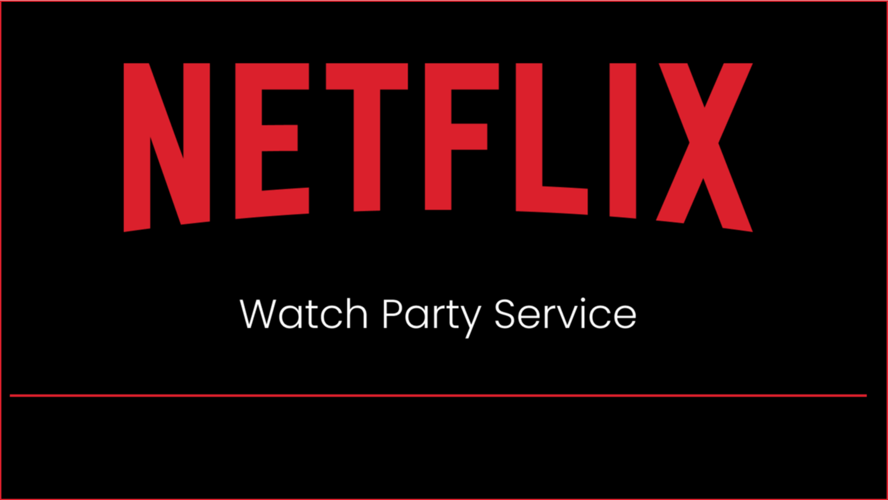

Designer curating the User Experience through innovative design. Experience with Figma and Adobe Creative Suite.
Skills
Figma
HTML
CSS
UserResearch
UserEmpathy
Storytelling
Collaboration
Visualization
Leadership
JavaScript
BootStrap
GitHub
My Work
Summary
The Department of the Treasury Case Study examines the usability, navigation, and heuristic issues the agency's website is facing. To address these issues a prototype of a new website was created to ease the users experience throughout the website.

Summary
The Netflix Watch Party Case Study dives into the opportunity of expanding Netflix's existing services to include a feature to allow users to stream and chat in live time with their friends.